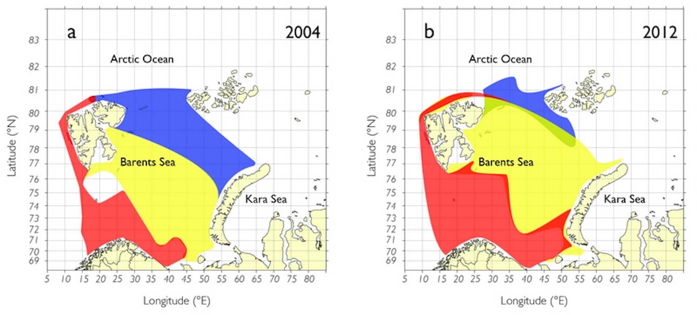
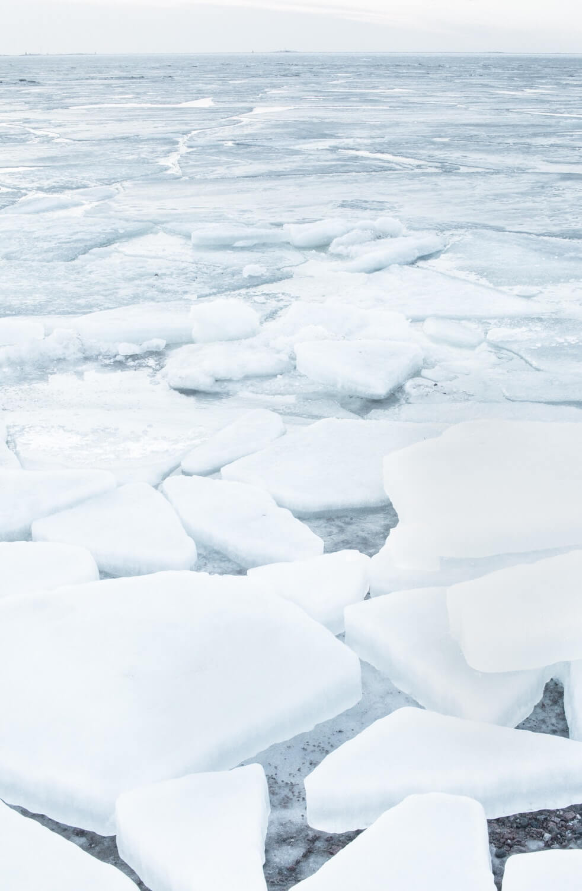
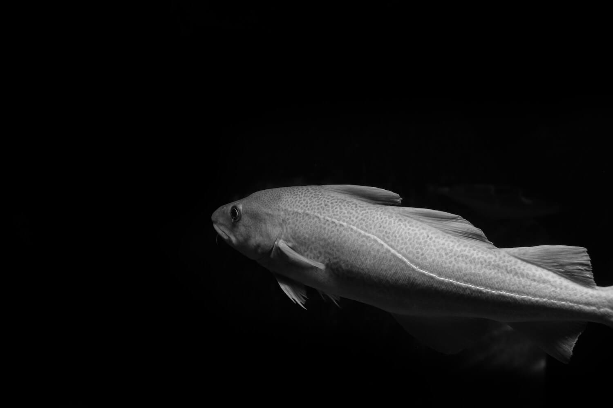

Rising ocean temperatures, sea ice decline, and the geographic re-distribution of Atlantic species are threatening vulnerable Arctic marine communities. Unless warming abates, Arctic species are likely to be replaced by boreal (Atlantic)
generalists.
Climate change is expected to profoundly alter biological communities across numerous ecosystems, having both direct and indirect effects on species distribution, growth rate, phenology, and mortality.
Historically, most studies of climate effects on animals focused on terrestrial species, with research into the effects on marine ecosystems being more
poorly developed. However, there is now an increasing volume of research suggesting that
major changes in marine communities are coming.
Unlike homeothermic birds and mammals, who maintain a constant internal temperature, fish are ectotherms. This means that they cannot control their own body temperature, instead relying upon the environment and their own behaviour to
modulate body temperature. As a result, fish are limited in their ability to withstand increases in ocean temperatures.
Given that marine ectotherms typically fully occupy their potential latitudinal range—as dictated by their
thermal tolerance limits—there is little debate that rising ocean temperatures will induce geographic re-distributions of marine
fishes. Species with no limits to dispersion are expected to track
local climate velocities, meaning poleward range boundaries are predicted to expand, while equatorward boundaries will contract with global warming.
‘Poleward range boundaries are predicted to expand, while equatorward boundaries will contract with global warming.’
These poleward shifts in distribution are alreadyextensively documented, especially among
fish. Redistributions are particularly pronounced in areas warming at rates above the global average, such as the Arctic/sub-Arctic, where marine
ecosystems are warming at twice the global average.
The Arctic ocean has already warmed by one to two degrees relative to the 1961 to 1990 average, with maximum summer sea ice extent retreating at a rate of roughly
13.1% per decade. Such drastic changes are rapidly blurring the polar frontal
zone, which separates Atlantic and Arctic water masses.
This polar frontal zone historically acted as a biogeographic barrier, separating boreal and Arctic fish species, which differ in terms of their thermal affinity. But this frontal zone has now broadly ceased to be an effective biogeographic
barrier, with boreal fish increasingly moving
into Arctic waters.

In just 8 years, Atlantic species (red and yellow areas) have significantly expanded poleward |
Fossheim et al (2015) / Arctic Program
As large predatory Atlantic (boreal) fish such as cod (Gadus morhua), beaked redfish (Sebastes mentella) and long rough dab (Hippoglossoides platessoides) species progressively move northward, Arctic communities
are increasingly found in fewer and fewer locations. This is partly due to boreal predators outcompeting Arctic species for food, but also relates to the limited capacity of Arctic communities to cope with rising ocean temperatures.
Most species are relatively small, stationary, have highly specialised diets, and are benthivorous (feed on organisms that live on or within bottom sediment). Making them particularly vulnerable to changes in food availability and any shift
in dominant energy pathways from benthic (bottom waters) to pelagic (open ocean) habitats associated
with sea ice decline.
While it seems inescapable that temperature ultimately limits the distributional range of marine fishes, a myriad of other factors also determine distributions. For example, the northward movement of boreal species has also been attributed
to higher productivity rates in previously ice covered areas and the increasing
abundance of Atlantic zooplankton.
However, there is a lack of major studies detailing distributional shifts where changes associated with temperature are not confounded with changes in abundance or fishing pressure. With one study suggesting the northward shift in North Sea
cod range was a reflection of differing
population growth rates, while another suggested the observed eastward shift was a function of
fishing-related depletion.

Declining sea ice is altering nutrient and food availability for Arctic fishes. | Juha Lakaniemi / Unsplash
This in no way invalidates the observed northward shifts in boreal species, nor does it undermine expected poleward shifts in the future, which has been shown to be robust even when correcting for non-temperature related effects.
It simply highlights the huge complexity that characterises marine ecosystems, particularly as the predicted response of a given species is highly non-linear. Varying with climate sensitivity (thermal tolerance), dispersal capacity
(migratory vs non-migratory), and the ability to exploit new food resources (generalist versus specialist).
However, the Arctic/sub-Arctic represents a unique example where expected changes are more relatively well constrained. As the highly specialised and non-migratory Arctic community is being pressurised from two sides, with higher
temperatures and sea ice decline making their habitat less favourable to them and more favourable to large, migratory generalists. Hence, it is not unreasonable to suggest local extinctions within Arctic communities are possible.
Currently, Arctic marine habitats are still largely perceived as pristine or untouched by the hand of human interference. Such a notion is increasingly unrepresentative, as profound changes are already underway and are only likely to
worsen.

The abundance of Atlantic Cod (Gadus morhua) is increasing within Arctic waters, putting pressure on native Arctic cod (Boreogadus saida). | Ricardo Resende / Unsplash
Future research utilising multi-species indicators (community assemblages and diversity indices) with a strong emphasis on disentangling the effects of temperature and natural or fishing related changes in population abundance will allow us
to more accurately identify vulnerable communities and ensure other anthropogenic pressures are minimised.
But this is merely window dressing, to prevent a fundamental shift in Arctic ecosystem structure, global greenhouse gas emissions need to be rapidly reduced. Otherwise, what we now define as an Arctic marine ecosystem, will quickly become
unrecognisable.
Featured Image: Sebastian Pena Lambarri | Unsplash
Dalpadado P., Ingvaldsen R.B., Stige L.C., Bogstad B., Knutsen T., Ottersen G. and Ellertsen, B. (2012) Climate effects on Barents Sea ecosystem dynamics. ICES Journal of Marine Science. Volume 69, Issue 7, pages
1303-1316.
Engelhard G.H., Righton D.A. and Pinnegar J.K. (2014) Climate change and fishing: a century of shifting distribution in North Sea cod. Global Change Biology. Volume 20, Issue 8, pages 2473-2483.
Dalpadado P., Arrigo K.R., Hjøllo S.S., Rey F., Ingvaldsen R.B., Sperfeld E., Van Dijken G.L., Stige L.C., Olsen A. and Ottersen G. (2014) Productivity in the Barents Sea-response to recent climate variability. PloS one.
Volume 9, Issues 5, pages e95273.
Wright P.J., Pinnegar J.K. and Fox C. (2020) Impacts of climate change on fish, relevant to the coastal and marine environment around the UK. MCCIP Sci Rev, 2020. Pages 354-81.
Cheung W.W., Lam V.W., Sarmiento J.L., Kearney K., Watson R. and Pauly D., 2009. Projecting global marine biodiversity impacts under climate change scenarios. Fish and fisheries. Volume 10, Issue 3, pages 235-251.
Rosenzweig C., Karoly D., Vicarelli M., Neofotis P., Wu Q., Casassa G., Menzel A., Root T.L., Estrella N., Seguin B. and Tryjanowski P. (2008) Attributing physical and biological impacts to anthropogenic climate change. Nature.
Volume 453, Issue 7193, pages 353-357.
Rekacewicz P., 2005. Definitions of the Arctic | GRID-Arendal. Grida.no. Available at: https://www.grida.no/resources/7010 [Accessed 24
August,
2021].
Hoegh-Guldberg, O. and Bruno, J.F. (2010) The impact of climate change on the world’s marine ecosystems. Science. Volume 328, Issue 5985, pages 1523-1528.
Fossheim M., Primicerio, R., Johannesen, E., Ingvaldsen, R.B., Aschan, M.M. and Dolgov, A.V. (2015) Recent warming leads to a rapid borealization of fish communities in the Arctic. Nature Climate Change. Volume 5, Issue 7,
pages 673-677.
Richardson A.J., Brown C.J., Brander K., Bruno J.F., Buckley L., Burrows M.T., Duarte C.M., Halpern B.S., Hoegh-Guldberg O., Holding J. and Kappel C.V. (2012) Climate change and marine life. National Institute of Aquatic
Resources.
Sunday J.M., Bates A.E. and Dulvy N.K. (2012) Thermal tolerance and the global redistribution of animals. Nature Climate Change. Volume 2, Issue 9, pages 686-690.